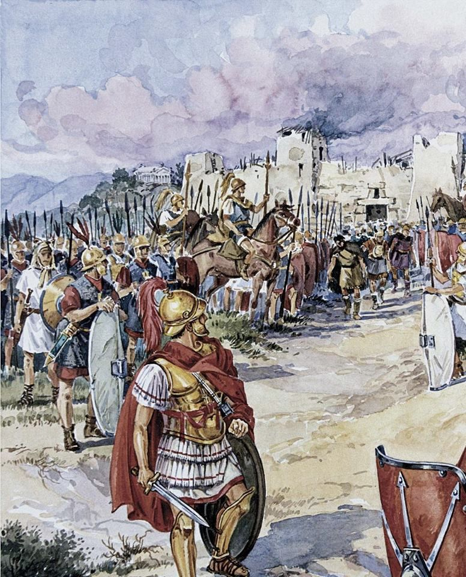
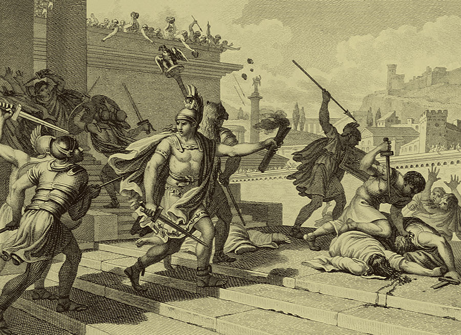
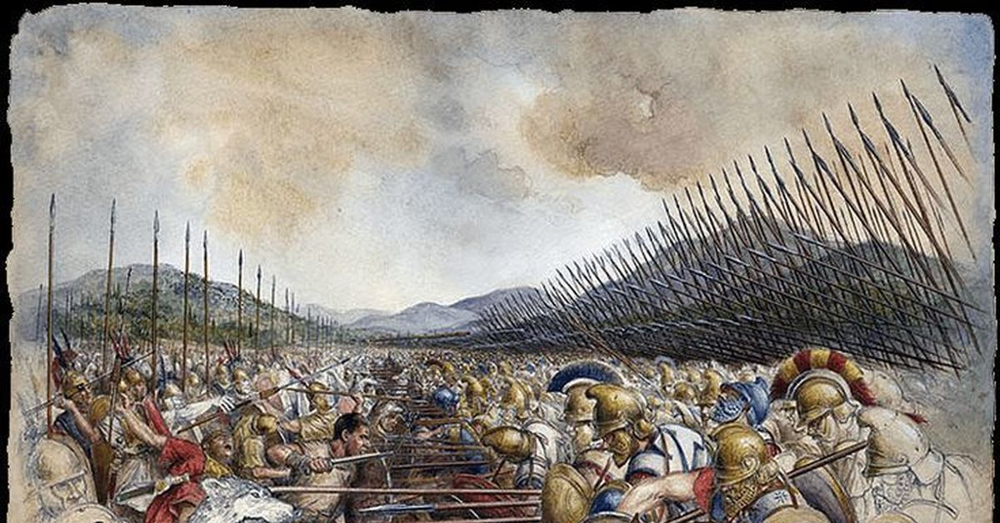
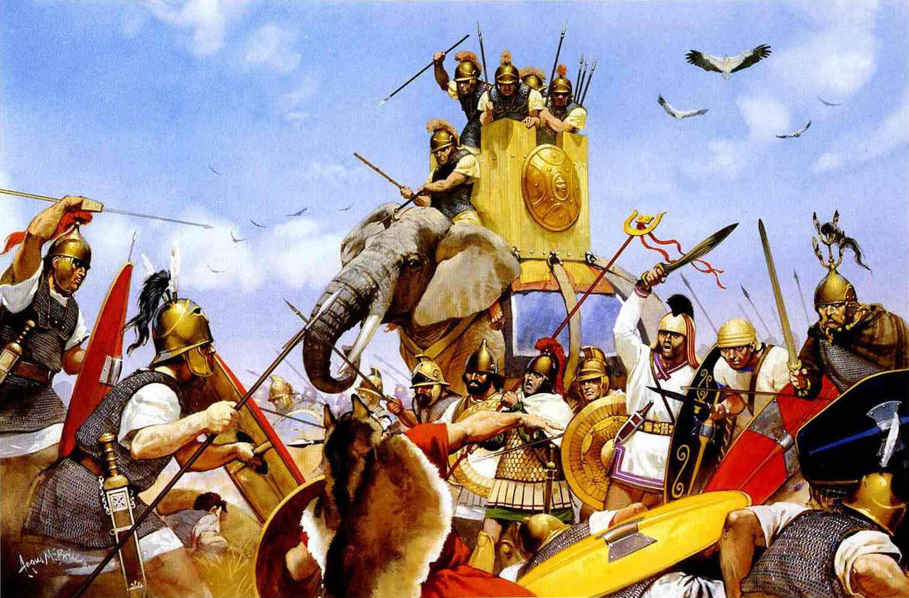
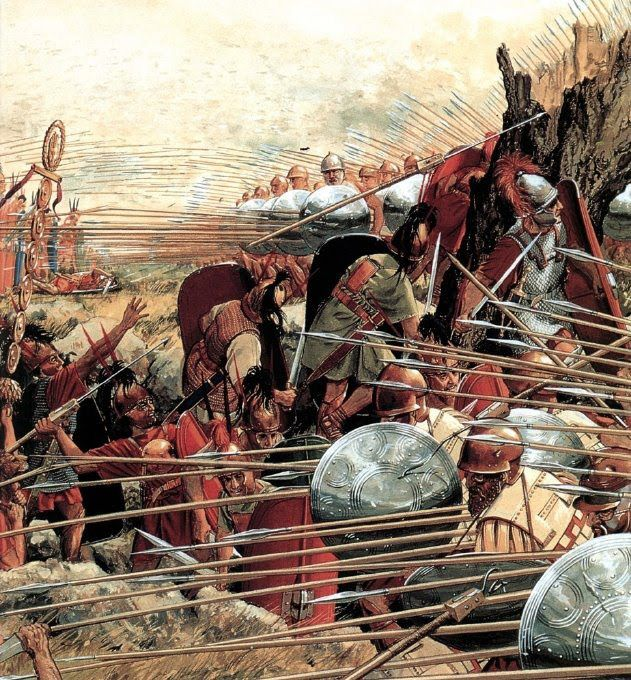
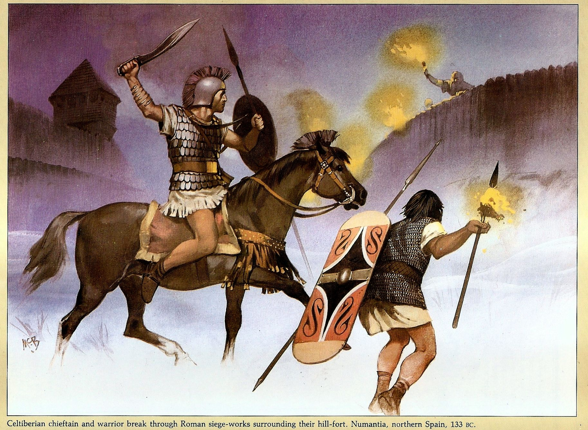
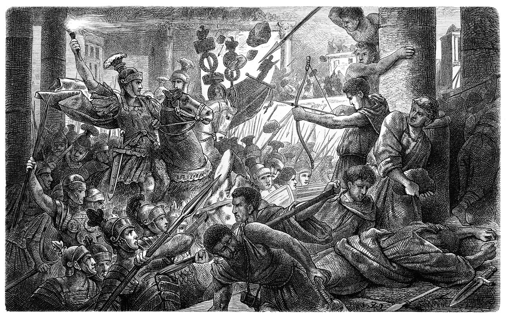

Пошук по посиланню :
Сільське господарство та грабунок були найпопулярнішими способами забезпечення родини протягом раннього періоду римської історії не лише Риму, але й її сусідів. Рим уклав договори з сусідніми селами та містами-державами, щоб дозволити їм об'єднати сили або оборонно, або агресивно. Як це було справедливо для багатьох цивілізацій протягом більшої частини давньої історії, взимку в Республіці зазвичай існував перепочинок у бойових діях та війнах. З часом союзи стали віддавати перевагу Риму. Незабаром Рим став домінуючим містом-державою в Італії. Тоді Римська республіка звернула свою увагу на свого суперника по області, карфагенян, який цікавився сусідньою територією.
Битва біля озера Регілл

На початку V століття до н. Е., Невдовзі після вигнання римських царів, римляни виграли битву біля озера Регілл, яку Лівій описує в книзі II своєї історії. Битва, яка, як і більшість подій того періоду, містить легендарні елементи, була частиною війни між Римом та коаліцією латинських держав, яку часто називали Латинська ліга.
Вієнтійські війни
Міста Веї та Рим (на території сучасної Італії) були централізованими містами-державами до V століття до н. Е. І з політичних, і з економічних причин обидва хотіли контролювати шляхи вздовж долини Тибру. Римляни хотіли контролювати Veii Fidenae, яке було на лівому березі, а Fidenae хотіли, щоб підконтрольний Риму правий берег. Як результат, вони тричі протягом цього століття воювали один проти одного.
Битва під Алією
Римляни зазнали серйозних поразки в битві при Алії, хоча ми не знаємо, скільки врятувались, перепливши Тибр і втекти до Вейя. Поразка під Алією ввійшла в список Канн серед найстрашніших катастроф у військовій історії Римської Республіки.
Самнітські війни
Самнітські війни допомогли встановити Стародавній Рим як верховну владу в Італії. Їх було троє між 343 і 290 р. До н. Е. Та вступаючою в Латинську війну.
Піррова війна
Одна колонія Спарти, Тарент, була багатим комерційним центром з флотом, але неадекватною армією. Коли римська ескадра кораблів прибула до узбережжя Тарентуму, порушуючи договір 302 року, який забороняв Риму доступ до його гавані, вони потопили кораблі і вбили адмірала і додали образи шкоди відхиленням римських послів. Щоб помститися, римляни рушили на Тарент, який найняв солдатів від епірського царя Піра. Після знаменитої "піррової перемоги" близько 281 р. До н. Е. Піррова війна охопила близько Від 280 до 272 р. До н. Е.
Пунічні війни
Пунічні війни між Римом і Карфагеном охоплювали роки з 264 по 146 р. До н. Е. З добре узгодженими обома сторонами перші дві війни затягувались і тривали; остаточна перемога йде не переможцю вирішальної битви, а стороні з найбільшою витривалістю. Третя Пунічна війна була зовсім іншим.
Македонські війни
Рим провів чотири македонські війни між 215 і 148 р. До н. Е. Перший - диверсія під час Пунічних воєн. У другому Рим офіційно звільнив Грецію від Філіпа та Македонії. Третя війна в Македонії велася проти сина Філіпа Персея. Четверта і остання війна в Македонії зробила Македонію та Епір римськими провінціями.
Іспанські війни
Під час Другої пунічної війни карфагеняни намагалися зробити станції в Іспанії, звідки вони могли здійснювати атаки на Рим. В результаті боротьби проти карфагенян римляни отримали територію на Піренейському півострові; після перемоги над Карфагеном вони назвали Іспанію однією зі своїх провінцій. Площа, яку вони отримали, була вздовж узбережжя. Їм потрібно було більше земель углиб країни, щоб захистити свої бази, і взяли в облогу кельтиберійців біля Нумантії приблизно 133 р. До н. Е.
Югуртинська війна

Югуртинська війна, з 112 по 105 р. До н. Е., Дала Риму владу, але жодної території в Африці. Це було більш значущим для виведення на відоме місце двох нових лідерів республіканського Риму: Маріуса, який воював разом з Югуртою в Іспанії, та ворога Маріуса Сулли.
Соціальна війна
Соціальна війна, яка велася з 91 по 88 р. До н. Е., Була громадянською війною між римлянами та їхніми італійськими союзниками. Як і громадянська війна в Америці, це було дуже дорого. Зрештою всі італійці, які припинили воювати - або лише ті, хто залишився вірними - отримали римське громадянство, заради якого вони пішли на війну.